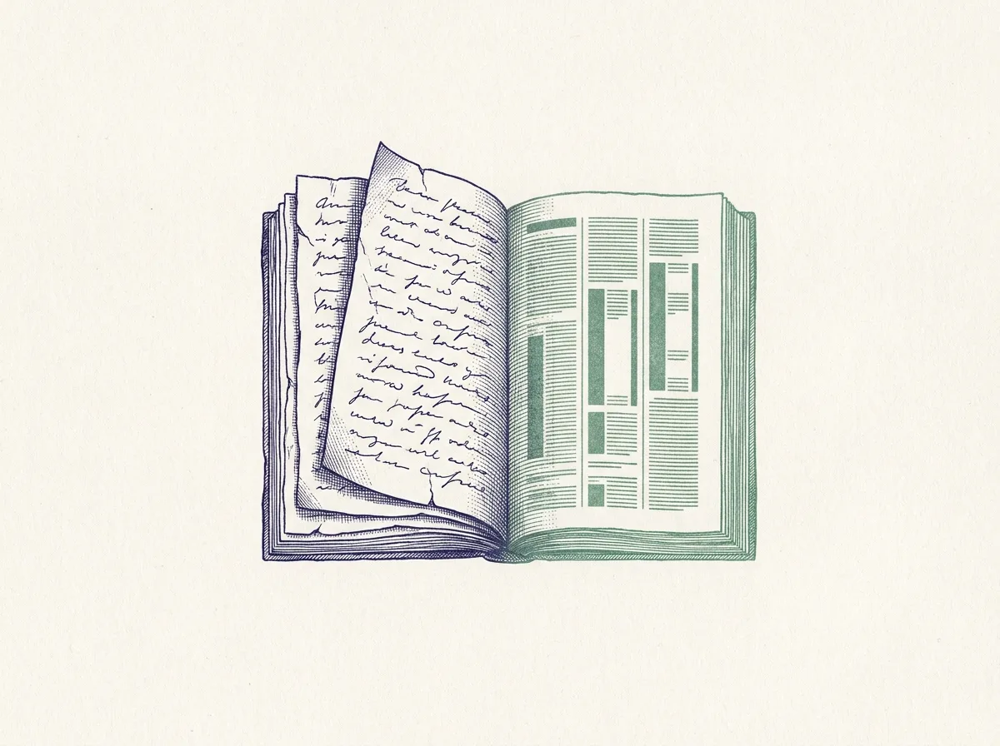

It writes the way you write
Give it five to ten of your past articles. It learns your sentence length, the phrases you favour, and how you open and close an argument, then drafts in that voice. Run /academic-writer:init once to teach it; /academic-writer:voice manages what it has learned.